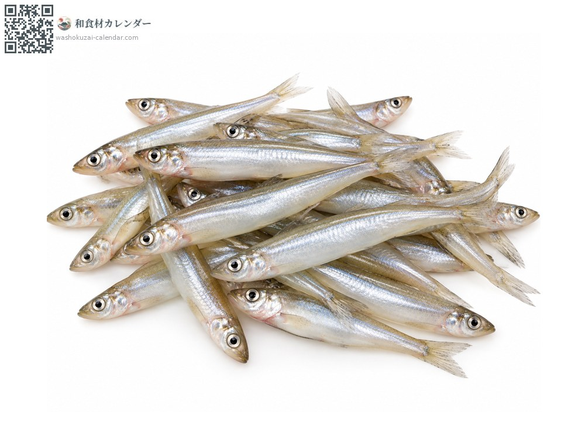
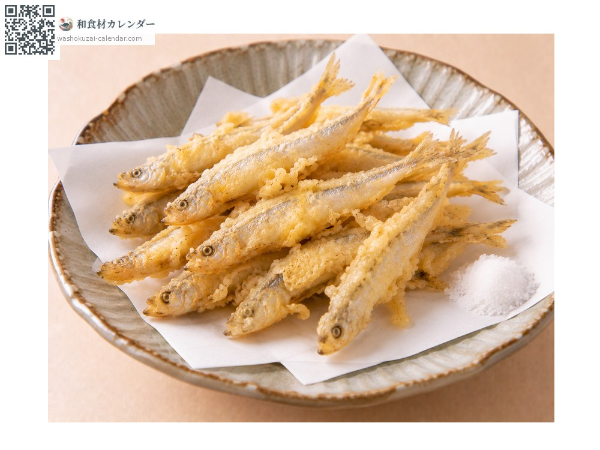
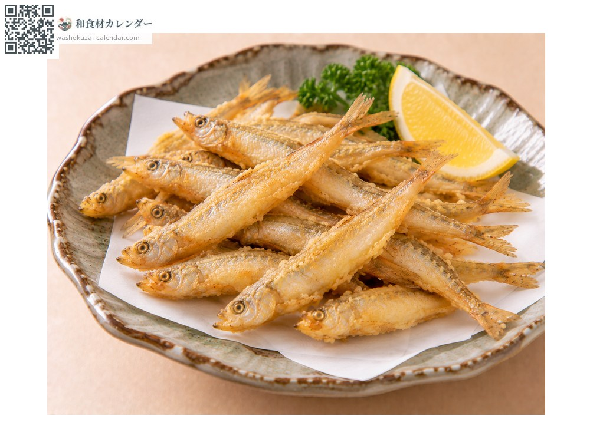
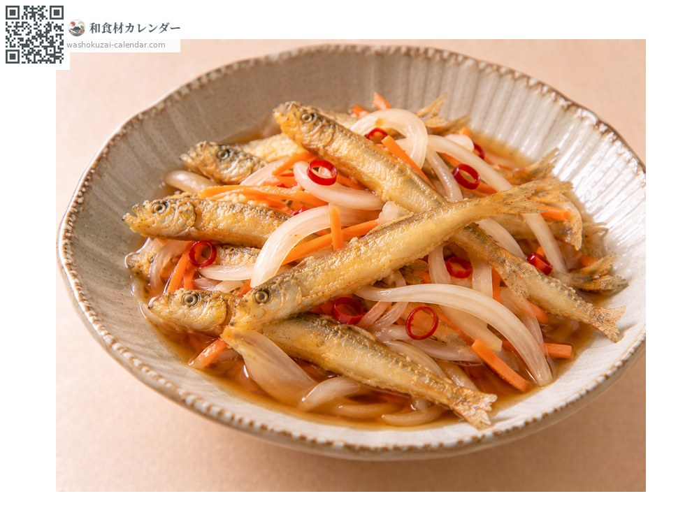
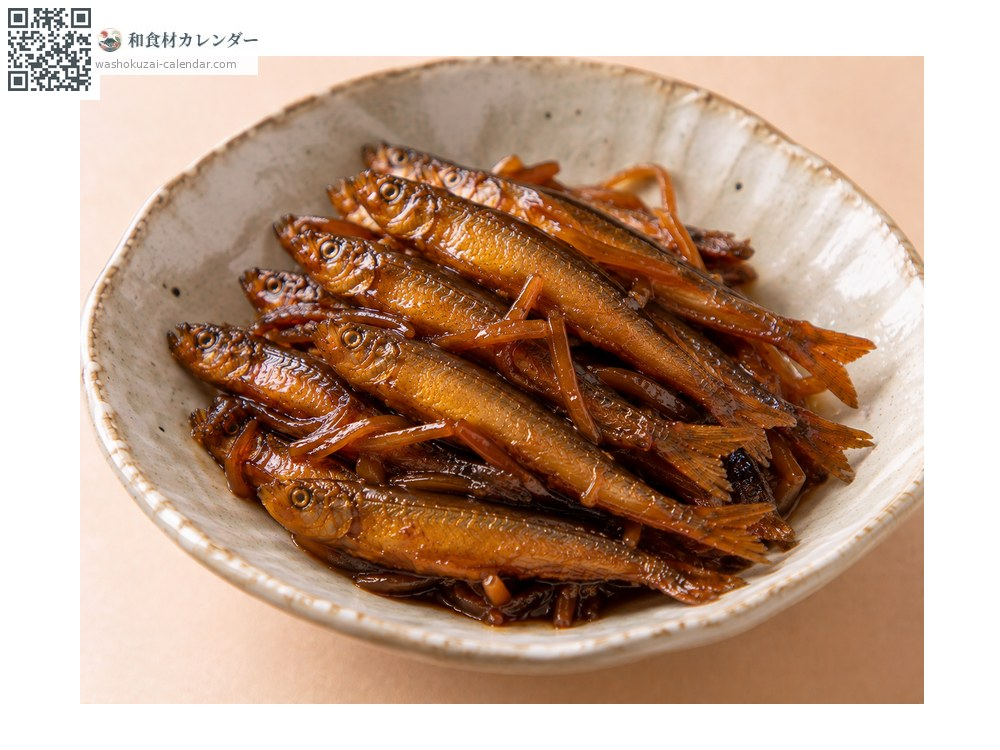

魚介
ワカサギ
わかさぎ
別名・別表記公魚、若鷺、wakasagi
旬は1月・2月・11月・12月

旬の時期
1月
2月
3月
4月
5月
6月
7月
8月
9月
10月
11月
12月
旬出回り
調理法

天ぷら
丸ごと揚げる。頭から尾まで食べられる。

唐揚げ
粉をまぶして揚げる。骨まで香ばしい。

南蛮漬け
揚げてから漬ける。日持ちもする。

佃煮
甘辛く煮る。保存が利く。
選び方
体が銀色に透き通り、目が澄んでいるもの。身が崩れていないもの。
保存方法
小さく傷みやすい。冷蔵で当日中に。下処理して冷凍もできる。
主な産地
豆知識
氷に穴を開けて釣る「穴釣り」で知られ、冬の風物詩となっている。骨が柔らかく内臓の苦味も穏やかなため、下処理せず丸ごと食べられる。海と湖の両方に生息し、湖のものは一年で一生を終える。